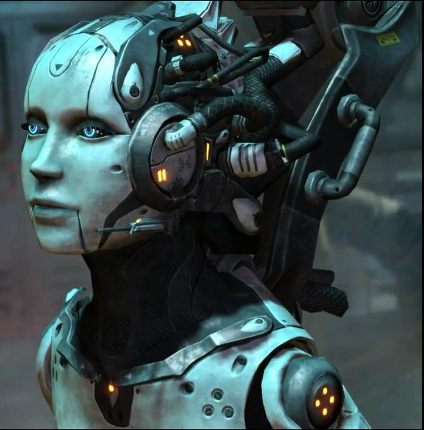
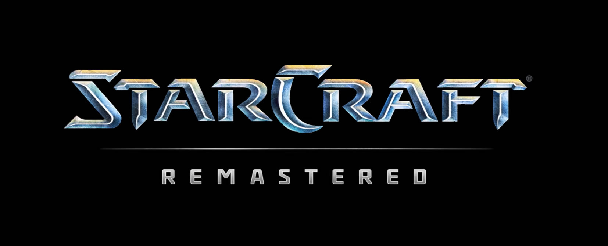
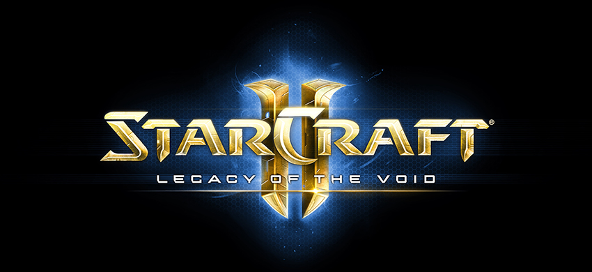

Inicio

StarCraft es una serie de videojuegos de estrategia en tiempo real creada por los diseñadores Chris Metzen y Bill Roper y desarrollada por la empresa Blizzard Entertainment, misma que se encarga también de su distribución internacional. La serie se centra en la disputa galáctica por la dominación entre cuatro especies - la adaptable y móvil Terran, la insectoide Zerg, los enigmáticos Protoss y la raza creadora Xel'Naga - en una parte distante de la Vía Láctea denominada como el sector Koprulu durante el principio del siglo XXVI. La serie debutó con el juego StarCraft en 1998. Desde ahí la serie ha crecido para incluir numerosos otros juegos, así como también ocho novelas, dos artículos en Amazing Stories, un juego de mesa y otros productos licenciados como las figuras coleccionables.

Blizzard Entertainment empezó la planificación de StarCraft en 1995, con un equipo de desarrollo liderado por Metzen y Phinney. El juego debutó en la E3 de 1996, utilizando una versión modificada del motor gráfico de Warcraft II. StarCraft marca también la creación del departamento de películas de Blizzard ya que el juego introduce cinemáticas de alta calidad, para la época, que permiten conectar las diversas partes de la historia del juego. La mayor parte del equipo de desarrollo de StarCraft participó en la creación de la expansión oficial del juego, StarCraft: Brood War lanzado poco después del juego original en 1998. En el 2001, StarCraft: Ghost inició su desarrollo por parte de Nihilistic Software. A diferencia del primer título de la serie, Ghost iba a corresponder a un videojuego de acción en primera persona. Luego de tres años de desarrollo, el juego fue pospuesto en 2004. El desarrollo de StarCraft II: Wings of Liberty se inició el 2003, siendo anunciado en 20071y lanzado al mercado el 2010. La serie StarCraft II continuó con StarCraft II: Heart of the Swarm en 2013 y StarCraft II: Legacy of the Void el 2015.
- 

- 